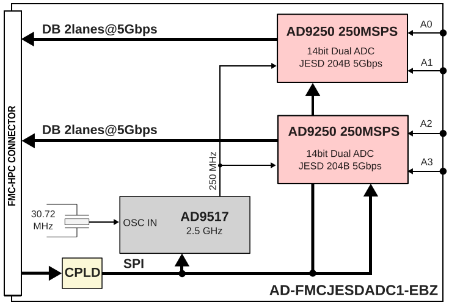
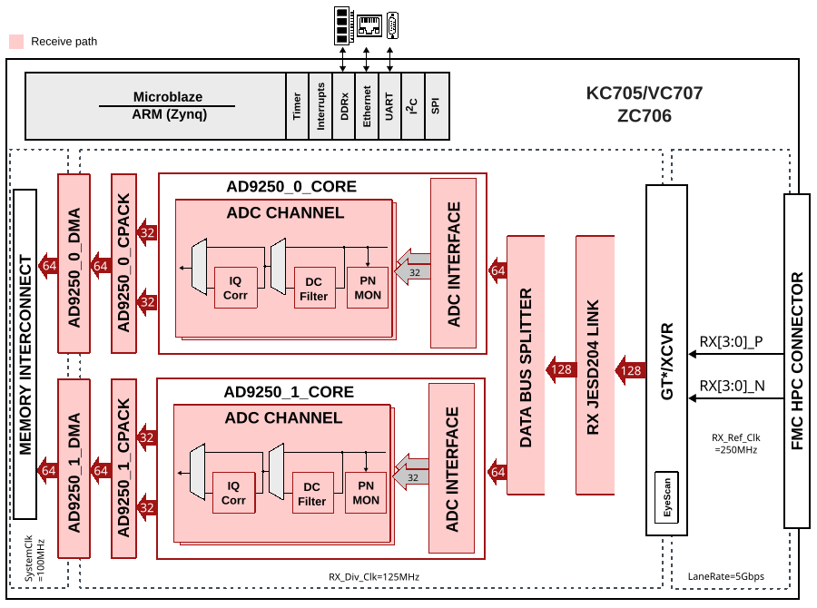

AD-FMCJESDADC1-EBZ
Warning
Support for the AD-FMCJESDADC1-EBZ is discontinued starting with the 2022_R2 ADI Kuiper Linux release and it will not be supported in future releases. The last release with pre-built files is 2021_r2. Check the Kuiper Linux page for all releases. The HDL project source code can still be found on the hdl_2021_r2 release branch.
The AD-FMCJESDADC1-EBZ is a high speed data acquisition board (4 channels at 245.76 MSPS), in an FMC form factor which supports the JESD204B high speed serial interface. This board meets all the FMC specifications in terms of mechanical size and mounting hole locations.
This board is targeted to use the ADI reference designs that work with both Altera and Xilinx development systems. The analog I/O on this board uses micro-miniature coaxial (MMCX) connectors. To connect to SMA-based test equipment, an adapter such as the Molex 89761-6810 is needed.


Contains
The card contains:
AD9250 two 14-bit ADCs with sampling speeds of up to 250 MSPS, with a JESD204B digital interface
AD9517-1 multi-output clock distribution device with subpicosecond jitter performance, along with an on-chip PLL and VCO
ADP151 ultralow noise, low dropout linear regulator, 2.2 V to 5.5 V, up to 200 mA output current
ADP1753 low dropout linear regulator, 1.6 V to 3.6 V input, up to 800 mA output current
AD7291 12-bit, low power, 8-channel, SAR ADC with internal temperature sensor
ADP2301 compact, constant-frequency, current-mode, step-down DC-to-DC regulator
ADG3304 bidirectional logic level translator with four channels
Supported Devices
Supported Carriers
HDL Reference Design
The reference design is built on a Microblaze-based system. The reference design consists of a single JESD204B core and two identical instances of AD9250 cores. The AD9250 core consists of three functional modules: the ADC interface, a PN9/PN23 monitor, and a DMA interface. The ADC interface captures and buffers data from the JESD204B core. The DMA interface then transfers the samples to the external DDR-DRAM.
All cores have an AXI-Lite interface that allows control and monitoring of data generation and capture. The reference design also includes HDMI cores for GTX eye scan support.
Block Diagrams


HDL Source Code
Changing ADC Sample Rates
The ADC sampling rate can vary from 40 MHz to 250 MHz. However, there are limitations imposed by the FPGA that may lower this range. In some cases, the cores may need to be regenerated for a different range. The reference design uses GTX (channel PLL) primitives and Xilinx’s JESD204B core IP. The default design runs at 250 MHz clock (5 Gbps rate).
The reference clock has a range of 60 MHz to 670 MHz, which limits the minimum sampling clock to 60 MHz. Though not recommended, it is possible to use the AD9517 to generate a 40 MHz sampling clock to the AD9250 and an 80 MHz reference clock to the FPGA.
The CPLL supports rates between 0.5 Gbps and 6.6 Gbps. The core may need to be reconfigured for rates below 3.2 Gbps (sampling rate 160 MHz). It is also possible to run the device on a single lane at a higher rate rather than two lanes at a lower rate to circumvent some line rate dependency issues.
Clocking
The AD-FMCJESDADC1-EBZ uses the AD9517-0. This is a small (7.0 mm x 6.75 mm), low power (~1.4 W) multi-output clock distribution function with subpicosecond jitter performance, along with an on-chip PLL and VCO. It is driven by a single 30.72 MHz crystal, and generates the necessary clocks for the system (2.4576 GHz, 245.760 MHz, 30.72 MHz).
The ADIsimCLK tool reports the following data for the 245.760 MHz outputs driving the AD9250:
Broadband Jitter (>1kHz) = 516fs (rms)
SNR = 69.79dB ENOB = 11.63bits
at IF Freq = 100 MHz
Integrated Phase Noise from 100kHz to 1.25MHz
Timing Jitter = 304fs rms
Phase Jitter EVM = 0.05% rms
Phase Jitter = 0.027 degrees rms
ACI/ACR = -69.6dBc
Delay from Ref to OUT2 is 420ps
This matches the datasheet performance when using the internal VCO. An external VCXO could decrease the jitter to approximately 54 fs rms, but this would violate the FMC height requirements.
Specifications
The AD-FMCJESDADC1-EBZ board’s primary purpose is to easily understand, validate, and verify the JESD204B interface with various FPGA manufacturers.
When putting things into the small FMC form factor, various tradeoffs were made which limit the performance to the first Nyquist zone. The specific transformer used (Minicircuits TC4-1W) is specified from 3 to 800 MHz, but is only linear in terms of insertion loss and input return loss within +/- 0.5 dB from 10 to 100 MHz.
Front End
The AD9250 datasheet recommends a Differential Double Balun Input Configuration for input frequencies in the second Nyquist zone and above. The AD-FMCJESDADC1-EBZ card uses a single differential transformer (Minicircuits TC4-1W) due to its smaller size (reduced footprint). This transformer is a good trade-off of size (3.8 mm x 3.8 mm x 3.8 mm), power (250 mW of RF), and impedance ratio (4:1 secondary/primary) for operation in the first Nyquist zone.
Quick Start
Required Hardware
Required Software
Kuiper Linux (for ZC706)
Pre-built MicroBlaze bitfile and Linux ELF image (for KC705/VC707)
A UART terminal (Tera Term or similar), baud rate 115200 (8N1)
ZC706 (Zynq, Linux)
Prepare a Kuiper Linux SD card following the instructions at Kuiper Linux. This generic image supports the AD-FMCJESDADC1-EBZ on the ZC706.
Insert the SD card into the ZC706 SD card slot (J30).
Plug the AD-FMCJESDADC1-EBZ into the HPC FMC connector (J37).
Connect an HDMI display to the HDMI video connector (P1).
Connect a USB keyboard/mouse to the USB 2.0 connector (J21).
Set boot mode switch SW11: pins 1-2 Down, 3-4 Up, 5 Down.
Connect the power supply to the 12 V power input connector (J22) and turn on the board.
Wait approximately 30 seconds for the DONE LED to turn green, then another 30 seconds for the HDMI display to show the desktop.
Note
The specifications of the AD9250 converter are better than most signal generators. Spurs or performance issues may result from an insufficiently clean source signal.
Once the system has booted, the IIO Oscilloscope application can be used to visualize ADC data:

KC705 / VC707 (MicroBlaze, Linux)
Download the pre-built MicroBlaze bitfile and Linux ELF image for the target board.
Connect the AD-FMCJESDADC1-EBZ to the HPC connector of the KC705 (HPC slot) or VC707 (FMC1 HPC connector).
Connect a USB JTAG cable (Micro USB) to the host PC.
Power on the FPGA board.
Open the XMD console to configure the FPGA and download the ELF image. Set the UART terminal to 115200 baud (8N1).
After boot, the board will obtain an IP address via DHCP. Connect the IIO Oscilloscope on a network-enabled host PC to the target’s IP address via Settings -> Connect.
Note
The IIO Oscilloscope can be used remotely by building and running the application on a network-enabled Linux host and connecting to the target board’s IP address.
FMC-176 Compatibility
The reference design is also compatible with the 4DSP FMC-176 board and its variations. The FMC-176 is a high speed data acquisition (4 ADC channels at 250 MSPS) and conversion (2 DAC channels at 5.6 GSPS) card, featuring two AD9250 and two AD9129 DACs.
Part Number |
ADC Channels |
DAC Channels |
|---|---|---|
FMC-176 |
4 (2x AD9250) |
2 (2x AD9129) |
FMC-230 |
2 (2x AD9129) |
|
AD-FMCJESDADC1-EBZ |
4 (2x AD9250) |
To fully support both DACs of the FMC-176, a carrier must have a fully populated HPC connector. The KC705 does not have a fully populated HPC connector, so only one DAC channel is available on that carrier.
Software Support
Linux Drivers
No-OS Drivers
Eye Scan
The JESD204B eye scan for this board can be found at JESD Eye Scan.

Visual Analog
VisualAnalog is a software package combining simulation and data analysis tools with a graphical interface, allowing designers to measure ADC performance with real input waveforms.
To use Visual Analog with the ZC706:
Ensure both the ZC706 and the host PC running Visual Analog are on the same network. This can be done using a crossover cable or by plugging both into a common network with DHCP.
Find the IP address of the ZC706 by opening a terminal on the board (Ctrl+Alt+T) and running
ip addr show.Enter this IP address in the IIO client settings within Visual Analog.

More Information
Support
Analog Devices will provide limited online support for anyone using the core with Analog Devices components (ADC, DAC, Video, Audio, etc) via the FPGA Reference Designs Forum.
For questions about the AD-FMCJESDADC1-EBZ hardware or the HDL reference design, use the FPGA Reference Designs sub-community.
For questions about the ADI Linux distribution, Linux drivers, or device trees, use the Linux Software Drivers sub-community.
For questions about the no-OS drivers, use the Microcontroller and No-OS Driver sub-community.
For general AD9250 questions, use the High Speed ADCs sub-community.